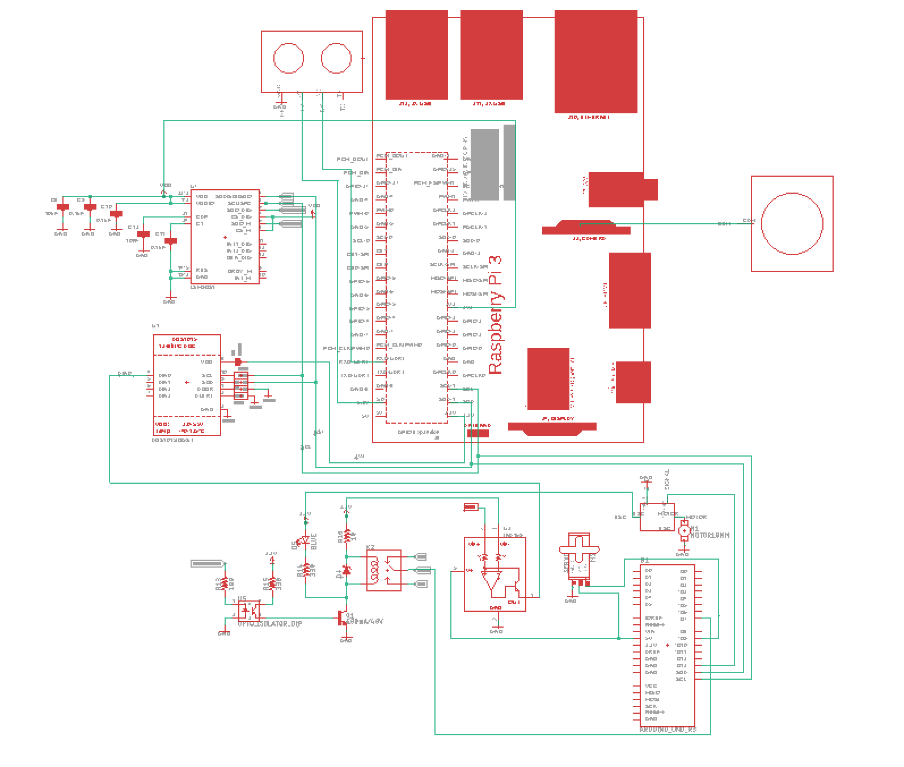

Electronics¶
The electronics section will deal with interfacing the Raspberry Pi and Arduino with the sensors and actuators.
Raspberry Pi Pinout¶

The Pi pinout image is often used as a reference because the GPIO pins on the board are often labelled.
Overall Circuitry¶
Wiring Simple

Wiring Schematics
Warning
The circuits are always prone to change, use with caution.
Pi and Arduino Communication¶
I2C Method¶
The code is from here, with slight changes to accommodate Python 3 instead of Python 2.
Wiring
| Rasberry Pi 3 | arduino Uno |
|---|---|
| GND | GND |
| SDA (pin3) | SDA (The pin above AREF) |
| SCL (pin5) | SCL (The pin above SDA) |
And you can power arduino by usb on pi or on your labtop

Upload Arduino code to Arduino board
The testing code is:
1 2 3 4 5 6 7 8 9 10 11 12 13 14 15 16 17 18 19 20 21 22 23 24 25 26 27 28 29 30 31 32 33 34 35 36 37 38 39 40 41 42 43 44 45 | #include <Wire.h>
#define SLAVE_ADDRESS 0x04
int number = 0;
int state = 0;
void setup() {
pinMode(13, OUTPUT);
Serial.begin(9600);
// initialize i2c as slave
Wire.begin(SLAVE_ADDRESS);
// define callbacks for i2c communication
Wire.onReceive(receiveData);
Wire.onRequest(sendData);
Serial.println("Ready!");
}
void loop() {
delay(100);
}
// callback for received data
void receiveData(int byteCount){
while(Wire.available()) {
number = Wire.read();
Serial.print("data received: ");
Serial.println(number);
if (number == 1){
if (state == 0){
digitalWrite(13, HIGH); // set the LED on
state = 1;
}
else{
digitalWrite(13, LOW); // set the LED off
state = 0;
}
}
}
}
// callback for sending data
void sendData(){
Wire.write(number);
}
|
Run the python code on the Raspberry Pi
The testing code is:
1 2 3 4 5 6 7 8 9 10 11 12 13 14 15 16 17 18 19 20 21 22 23 24 25 26 27 28 29 | import smbus
import time
bus = smbus.SMBus(1)
# This is the address we setup in the Arduino Program
address = 0x04
def writeNumber(value):
bus.write_byte(address, value)
return -1
def readNumber():
number = bus.read_byte(address)
return number
while True:
var = int(input("Enter 1 ^ ^ 9: "))
if not var:
continue
writeNumber(var)
print("RPI: Hi Arduino, I sent you ", var)
# sleep one second for debug
time.sleep(1)
number = readNumber()
print("Arduino: Hey RPI, I received a digit ", number)
print()
|
See Also:¶
Tip
To open i2c bus0 on raspberry pi, you need to change the file /boot/config.txt
Under the i2c section, the txt should be
#Uncomment some or all of these to enable the optional hardware interfaces
dtparam=i2c_arm=on
dtparam=i2c_vc=on
dtparam=i2c_baudrate=1000000
#dtparam=i2s=on
device_tree_param=i2c0=on
device_tree_param=i2c=on
dtparam=spi=on
Then you can use the bus0 for i2c.
SPI Method¶
Wiring
| Rasberry Pi 3 | arduino Uno |
|---|---|
| GND | GND |
| MOSI (Pin19) | MOSI (Pin11) |
| MISO (Pin21) | MISO (Pin12) |
| SCLK (Pin23) | SCLK (Pin13) |
| cell0 (Pin24) | SS (Pin10) |
and you can choose to power the arduino using USB cable on Pi or on your laptop.
SPI on arduino
First the MISO pin has to be defined as an output pin. All other pins are configured automatically as input pins if the SPI is enabled:
pinMode(MISO, OUTPUT);
Second the SPI enable bit needs to be set:
SPCR |= _BV(SPE);
Reading and writing of SPI data is performed through SPDR. Programmatically you can treat SPDR as you would a variable. To read the contents of SDPR, it can either be accessed directly, or another variable can be set equal to it:
i = SPDR;
To load the data register with a value to transmit back to the master, the statement is reversed:
SPDR = i;
At the hardware level SPDR includes both an 8-bit shift register and an 8-bit receive buffer. When the slave is receiving data, that data is shifted into the shift register one bit at a time while the original 8-bits in the register are shifted back to the master. When a complete byte has been shifted into the register, that byte is then copied into the receive buffer. The receive buffer won’t be updated again until the next complete byte is received.
Note
This means if the pi(master) wants to read from arduino(slave), it has to send something first !!
Code:
code on arduino
/*************************************************************
SPI_Hello_Raspi
Configures Arduino as an SPI slave and demonstrates
bidirectional communication with an Raspberry Pi SPI master
****************************************************************/
#include <SPI.h>
byte c = 0;
/***************************************************************
Setup SPI in slave mode (1) define MISO pin as output (2) set
enable bit of the SPI configuration register
****************************************************************/
void setup (void)
{
Serial.begin(9600);
pinMode(MISO, OUTPUT);
SPCR |= _BV(SPE);
}
/***************************************************************
Loop until the SPI End of Transmission Flag (SPIF) is set
indicating a byte has been received. When a byte is
received, load the byte,print it, and put 0x08 into SPDR for pi
to read
****************************************************************/
void loop (void)
{
if((SPSR & (1 << SPIF)) != 0)
{
//arduino should receive 3 and 4
//and send 8 to pi
c = SPDR;
Serial.print("we received: ");
Serial.println(c);
SPDR = 8;
}
}
Python code on Pi(make sure you have pigpio installed and running by sudo pigpiod in terminal):
#!/usr/bin/env python
import time,pigpio
#open spi
pi = pigpio.pi()
if not pi.connected:
exit(0)
h = pi.spi_open(0, 40000)
#function for communicating with arduino
def communicate():
while True:
#first send byts to arduino
pi.spi_write(h,b'\x03\x04')
#sleep 1 second and read 1 byte
time.sleep(1)
#pi shoudl receive 0x08, which is sent from arduino
#spi_read returns a tuple, first is the number of bytes read,
#second is the byte array contains the bytes
(count,data) = pi.spi_read(h,1)
#at the same time for reading, arduino will receive 1 byte, which is 0x00
#Why? remember in order to read, the pi has to send something to the arduino first !
#By default, it will write 0 to arduino in order to read.
print("we get %s" % data)
if __name__ == '__main__':
try:
communicate()
except:
pi.spi_close(h)
pi.stop()
The arduino should continueously print 3,4 and 0 (for pi reading purpose) and pi should receive and print 0x08.
Resources¶
Serial Method¶
Wiring
Connect arduino USB port to one of the USB port on raspberry pi
Code
The code is under PiCar/src/Pi_Arduino_Communication/serial
On python side, it will continuously ask you to input a float, send it to arduino.
On arduino side, once the float is sent, it will recive the data and then send it back to pi.
Difference compared with I2C and SPI
As Serial communication is well studied, we are able to send and read block of bytes on pi side.
As a result, it is much more convenient to send data more than 1 byte (discussed in next section).
Sending more than one byte between Pi and Arduino¶
Reason
The above basic communication (i2c,spi) allows us to send one byte between pi and arduino. However, if we want to send data that is more than one byte, such as float, the above method does not work. We first thought this is a well developed problem, and there should be easy function being called to send block of data. However, the truth is that as far as we searched, none of the proposed solution works. We come out this example for sending float between pi and arduino. If you want to develop data other than float, you are welcomed to do so.
Wiring
Same as I2C section or SPI section did
Code
The code for this is under PiCar/src/Pi_Arduino_Communication
each subfolder(i2c,spi,serial) contains two files, .ino file should run on arduino, and
.py file should run on raspberry pi.
Note
The key for communication is to write a simple protocol, and split a float into 4 bytes, so we can send 1 byte each time.
I2C by GPIO(General-purpose input/output)¶
Reason
Sometimes, we may want to save I2C pin to other device, or we may want to connect multiple arduino to raspberry pi. In this sections, we will use GPIO pins to connect our arduino by i2c.
Wiring
| Rasberry Pi 3 | arduino Uno |
|---|---|
| GND | GND |
| Pin19 | SDA(The pin above AREF) |
| Pin13 | SCL(The pin above SDA) |
And you can power Arduino in whatever way you want.
Code
The arduino code is the same as above (I2C section)
The following is the code on Pi, make sure you have pigpio installed and running.
import pigpio
import time
pi = pigpio.pi()
address = 0x04
SDA = 19
SCL = 13
def communication():
while True:
connection = pi.bb_i2c_open(SDA,SCL,9600)
var = int(input("Enter 1 ^ ^ 9: "))
if not var:
continue
pi.bb_i2c_zip(SDA,[4,address,0x02,0x07,0x01,var,0x03,0x00])
print("RPI: Hi Arduino, I sent you ", var)
time.sleep(1)
number = pi.bb_i2c_zip(SDA,[4,address,0x02,0x06,0x01,0x03,0x00])
print("Arduino: Hey RPI, I received a digit ", number)
print()
pi.bb_i2c_close(SDA)
if __name__ == '__main__':
try:
communication()
except:
pi.bb_i2c_close(SDA)
Resources¶
PI and TFMini Lidar Communication¶
Setup¶
To search for available serial ports, enter the following command in terminal:
dmesg | grep tty
If the output looks like:
pi@raspberrypi:~ $ dmesg | grep tty
[ 0.000000] Kernel command line: 8250.nr_uarts=1 bcm2708_fb.fbwidth=1824 bcm2708_fb.fbheight=984 bcm2708_fb.fbswap=1 dma.dmachans=0x7f35
bcm2709.boardrev=0xa02082 bcm2709.serial=0x11f38c9c bcm2709.uart_clock=48000000 smsc95xx.macaddr=B8:27:EB:F3:8C:9C vc_mem.mem_base=0x3dc00000
vc_mem.mem_size=0x3f000000 dwc_otg.lpm_enable=0 console=tty1 console=ttyS0,115200 root=/dev/mmcblk0p7 rootfstype=ext4 elevator=deadline
fsck.repair=yes rootwait splash plymouth.ignore-serial-consoles
[ 0.001365] console [tty1] enabled
[ 0.343313] console [ttyS0] disabled
[ 0.343481] 3f215040.uart: ttyS0 at MMIO 0x3f215040 (irq = 59, base_baud = 31250000) is a 16550
[ 1.078177] console [ttyS0] enabled
[ 2.210431] 3f201000.uart: ttyAMA0 at MMIO 0x3f201000 (irq = 87, base_baud = 0) is a PL011 rev2
[ 3.527349] systemd[1]: Expecting device dev-ttyS0.device...
[ 4.653975] systemd[1]: Starting system-serial\x2dgetty.slice.
[ 4.669517] systemd[1]: Created slice system-serial\x2dgetty.slice.
The console needs to be disabled on the serial port ttyAMA0.
To do so, run the configuration command
sudo raspi-config
and navigate to option 5, Interfacing Options. Choose P6, Serial.
When prompted, answer No to “Would you like a login shell to be accessible over serial?” and Yes to “Would you like the seria port hardware to be enabled?”.
Enter the following command to reboot and search for available ports again:
sudo reboot
dmesg | grep tty
The output now should look like:
pi@raspberrypi:~ $ dmesg | grep tty
[ 0.000000] Kernel command line: 8250.nr_uarts=1 bcm2708_fb.fbwidth=1824 bcm2708_fb.fbheight=984 bcm2708_fb.fbswap=1
dma.dmachans=0x7f35 bcm2709.boardrev=0xa02082 bcm2709.serial=0x11f38c9c bcm2709.uart_clock=48000000
smsc95xx.macaddr=B8:27:EB:F3:8C:9C vc_mem.mem_base=0x3dc00000 vc_mem.mem_size=0x3f000000 dwc_otg.lpm_enable=0
console=tty1 root=/dev/mmcblk0p7 rootfstype=ext4 elevator=deadline fsck.repair=yes rootwait splash plymouth.ignore-serial-consoles
[ 0.001345] console [tty1] enabled
[ 0.343464] 3f215040.uart: ttyS0 at MMIO 0x3f215040 (irq = 59, base_baud = 31250000) is a 16550
[ 1.146776] 3f201000.uart: ttyAMA0 at MMIO 0x3f201000 (irq = 87, base_baud = 0) is a PL011 rev2
Wiring¶
| Rasberry Pi 3 | TFmini |
|---|---|
| +5V | 5V (RED) |
| GND | GND (BLACK) |
| TXD0 (pin8) | RX (WHITE) |
| RXD0 (pin10) | TX (GREEN) |
Note
the white wire on TFmini Lidar is used to write command to it. If we just want to read from it, we can leave the white wire not connected.
Code¶
1 2 3 4 5 6 7 8 9 10 11 12 13 14 15 16 17 18 19 20 21 22 23 24 25 26 27 28 29 30 31 32 33 | # tfmini.py
# supports Python 2
# prints distance from sensor
#coding: utf-8
import serial
import time
ser = serial.Serial("/dev/ttyS0", 115200)
def getTFminiData():
while True:
count = ser.in_waiting
#count = 0
#print(count)
if count > 8:
recv = ser.read(9)
ser.reset_input_buffer()
if recv[0] == 'Y' and recv[1] == 'Y': # 0x59 is 'Y'
low = int(recv[2].encode('hex'), 16)
high = int(recv[3].encode('hex'), 16)
distance = low + high * 256
print('distance is: ')
print(distance)
time.sleep(1)
if __name__ == '__main__':
try:
if ser.is_open == False:
ser.open()
getTFminiData()
except KeyboardInterrupt: # Ctrl+C
if ser != None:
ser.close()
|
1 2 3 4 5 6 7 8 9 10 11 12 13 14 15 16 17 18 19 20 21 22 23 24 25 26 27 28 29 30 31 32 33 34 35 36 37 38 39 40 41 42 43 44 45 46 47 48 49 | # tfmini_2.py
# supports Python 2 or Python 3
# prints distance and strength from sensor
#coding: utf-8
import serial
import time
ser = serial.Serial("/dev/ttyS0", 115200)
def getTFminiData():
while True:
#time.sleep(0.1)
count = ser.in_waiting
if count > 8:
recv = ser.read(9)
ser.reset_input_buffer()
# type(recv), 'str' in python2(recv[0] = 'Y'), 'bytes' in python3(recv[0] = 89)
# type(recv[0]), 'str' in python2, 'int' in python3
if recv[0] == 0x59 and recv[1] == 0x59: #python3
distance = recv[2] + recv[3] * 256
strength = recv[4] + recv[5] * 256
print('(', distance, ',', strength, ')')
ser.reset_input_buffer()
if recv[0] == 'Y' and recv[1] == 'Y': #python2
lowD = int(recv[2].encode('hex'), 16)
highD = int(recv[3].encode('hex'), 16)
lowS = int(recv[4].encode('hex'), 16)
highS = int(recv[5].encode('hex'), 16)
distance = lowD + highD * 256
strength = lowS + highS * 256
print(distance, strength)
# you can also distinguish python2 and python3:
#import sys
#sys.version[0] == '2' #True, python2
#sys.version[0] == '3' #True, python3
if __name__ == '__main__':
try:
if ser.is_open == False:
ser.open()
getTFminiData()
except KeyboardInterrupt: # Ctrl+C
if ser != None:
ser.close()
|
Use GPIO pin for reading¶
If we connect TX (green wire on TFmini Lidar) to the GPIO pin23, we can use it as a simulative port and read from it.
# -*- coding: utf-8 -*
import pigpio
import time
RX = 23
pi = pigpio.pi()
pi.set_mode(RX, pigpio.INPUT)
pi.bb_serial_read_open(RX, 115200)
def getTFminiData():
while True:
#print("#############")
time.sleep(0.05) #change the value if needed
(count, recv) = pi.bb_serial_read(RX)
if count > 8:
for i in range(0, count-9):
if recv[i] == 89 and recv[i+1] == 89: # 0x59 is 89
checksum = 0
for j in range(0, 8):
checksum = checksum + recv[i+j]
checksum = checksum % 256
if checksum == recv[i+8]:
distance = recv[i+2] + recv[i+3] * 256
strength = recv[i+4] + recv[i+5] * 256
if distance <= 1200 and strength < 2000:
print(distance, strength)
#else:
# raise ValueError('distance error: %d' % distance)
#i = i + 9
if __name__ == '__main__':
try:
getTFminiData()
except:
pi.bb_serial_read_close(RX)
pi.stop()
In this way, we can save the TX port for other device, or connect multiple lidars to raspberry pi
Pi Camera Usage¶
Connection¶
Install the Raspberry Pi Camera module by inserting the cable into the Raspberry Pi. The cable slots into the connector situated between the Ethernet and HDMI ports, with the silver connectors facing the HDMI port.
Capture an image¶
sudo raspistill -o image.jpg
Record a video for 10 seconds¶
sudo raspivid -o video.h264 -t 10000
PI and IMU communication¶
I2C Method by LSM9DS1 Library¶
Setup¶
In order to use the LSM9DS1 Library, we need to install WiringPi first. Enter the following command in Pi terminal:
sudo apt-get install libi2c-dev
git clone git://git.drogon.net/wiringPi
cd wiringPi
git pull origin
./build
Then we can install the LSM9DS1 Library:
git clone https://github.com/akimach/LSM9DS1_RaspberryPi_Library.git
cd LSM9DS1_RaspberryPi_Library
make
sudo make install
To test it, we can run the python sample code inside the library once we connect the IMU:
cd LSM9DS1_RaspberryPi_Library/example
sudo python LSM9DS1_Basic_I2C.py
Wiring
| RPI | IMU |
|---|---|
| 3.3v (Pin1) | Vcc |
| SDA (Pin3) | SDA |
| SCL (Pin5) | SCL |
| GND (Pin6) | Gnd |
Resources¶
I2C Method¶
The example code for this section in the PiCar/src/pi/imu.
To compile, use the command:
gcc -o <programname> runi2c.c -lm
Wiring:
same as above did
The connection is by SMBUS.
For RPI, go to /usr/include/linux, replace i2c_dev.h with the header file in the repository
(Method ‘enableIMU’ needs further development to enable IMU configuration setting)